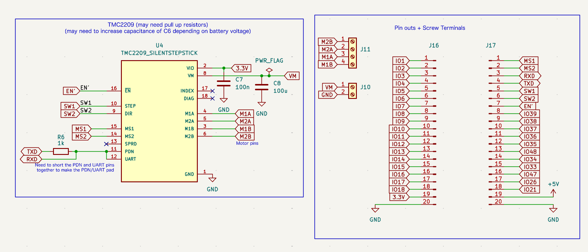
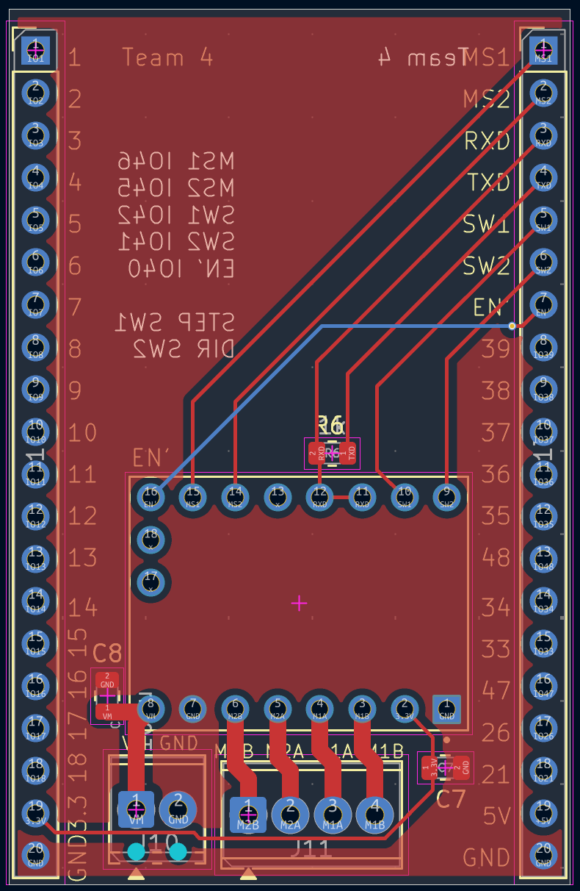
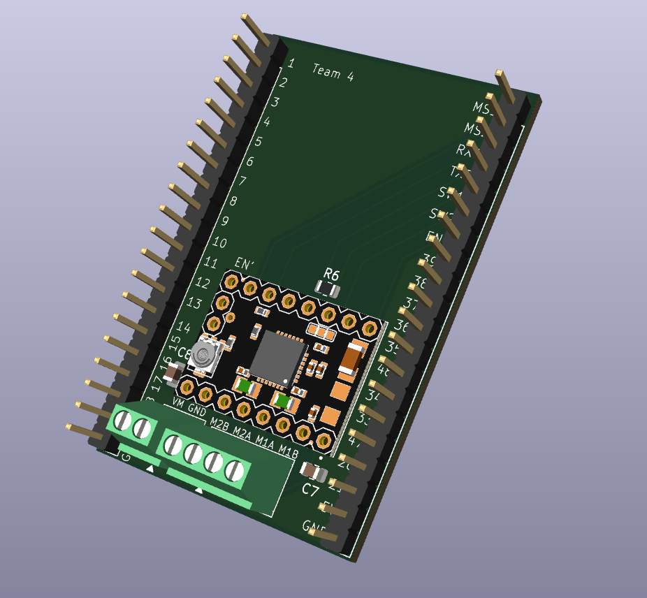

07 / PCB
The printed circuit board.
The AutoBlinds PCB carries an ESP32 module for control and BLE, a TMC2209 stepper motor driver for the actuator, and screw terminal blocks for power and motor coils. Below: schematic, 2D board view, and 3D render.
7.1 / Schematic
Schematic.

1 2 3 4
Fig 7.1 / Schematic
Two main blocks: TMC2209 stepper driver subsystem on the left, and ESP32 pin-header / power input section on the right.
- 1TMC2209 stepper driver (U4) receives STEP/DIR signals and drives the motor coils via M1A/M1B/M2A/M2B
- 2Decoupling caps C7 (100 nF) & C8 (100 µF) stabilize VM and 3.3 V rails near the driver
- 3Screw terminals J10 & J11 for VM/GND power input and motor coil output
- 4ESP32 pin headers J16 & J17 exposes IO pins, UART, and 3.3 V / 5 V / GND
7.2 / Board layout
Board.

1 2 3
Fig 7.2 / Board layout
Top copper view. Pin headers run along both long edges; the ESP32 module sits in the middle of the board, with the stepper driver and screw terminals along the bottom.
- 1TMC2209 driver footprint surface-mount pads with R6 resistor and routing visible above
- 2Motor screw terminal (J11) which is a four position block exposing M1A / M1B / M2A / M2B coil connections
- 3Power input (J10) which is VM / GND screw terminal
7.3 / 3D render
3D view.

1 2 3 4
Fig 7.3 / 3D render
Realistic view of the assembled board. Used to verify component clearance and mechanical fit inside the 3D printed enclosure.
- 1TMC2209 stepper driver through hole-mounted in the center of the board
- 2R6 and decoupling capacitors C7 / C8 used for filtering and stabilizing the power supply
- 3Screw terminal blocks power input (VM / GND) and motor coils (M1A / M1B / M2A / M2B)
- 4"Team 4" silkscreen and pin numbering / labels printed in white silk